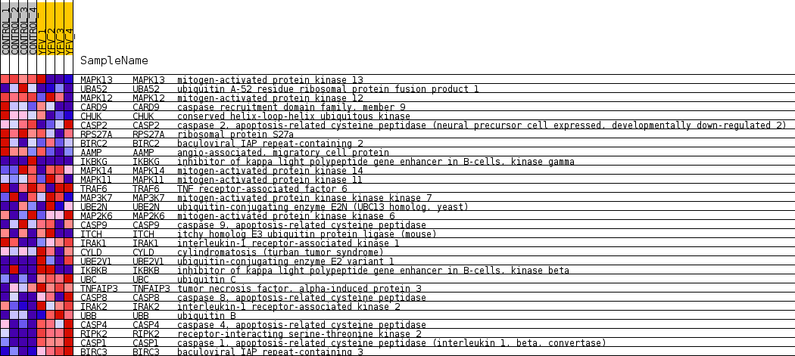
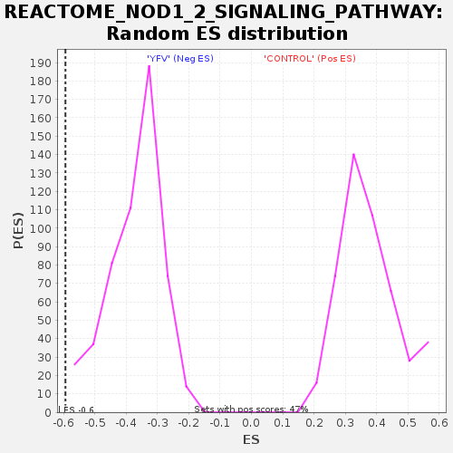

Profile of the Running ES Score & Positions of GeneSet Members on the Rank Ordered List
| Dataset | MATRIZ_GSE99081_collapsed_to_symbols.gsea_CLASE_99081.cls#CONTROL_versus_YFV |
| Phenotype | gsea_CLASE_99081.cls#CONTROL_versus_YFV |
| Upregulated in class | YFV |
| GeneSet | REACTOME_NOD1_2_SIGNALING_PATHWAY |
| Enrichment Score (ES) | -0.59438777 |
| Normalized Enrichment Score (NES) | -1.5975145 |
| Nominal p-value | 0.0 |
| FDR q-value | 0.06618538 |
| FWER p-Value | 0.893 |
| SYMBOL | TITLE | RANK IN GENE LIST | RANK METRIC SCORE | RUNNING ES | CORE ENRICHMENT | |
|---|---|---|---|---|---|---|
| 1 | MAPK13 | mitogen-activated protein kinase 13 | 1947 | 0.491 | -0.0871 | No |
| 2 | UBA52 | ubiquitin A-52 residue ribosomal protein fusion product 1 | 1969 | 0.488 | -0.0556 | No |
| 3 | MAPK12 | mitogen-activated protein kinase 12 | 2585 | 0.399 | -0.0667 | No |
| 4 | CARD9 | caspase recruitment domain family, member 9 | 2756 | 0.374 | -0.0520 | No |
| 5 | CHUK | conserved helix-loop-helix ubiquitous kinase | 2761 | 0.373 | -0.0272 | No |
| 6 | CASP2 | caspase 2, apoptosis-related cysteine peptidase (neural precursor cell expressed, developmentally down-regulated 2) | 2856 | 0.358 | -0.0089 | No |
| 7 | RPS27A | ribosomal protein S27a | 4134 | 0.232 | -0.0721 | No |
| 8 | BIRC2 | baculoviral IAP repeat-containing 2 | 4955 | 0.163 | -0.1117 | No |
| 9 | AAMP | angio-associated, migratory cell protein | 5158 | 0.141 | -0.1147 | No |
| 10 | IKBKG | inhibitor of kappa light polypeptide gene enhancer in B-cells, kinase gamma | 5852 | 0.088 | -0.1515 | No |
| 11 | MAPK14 | mitogen-activated protein kinase 14 | 6828 | 0.020 | -0.2103 | No |
| 12 | MAPK11 | mitogen-activated protein kinase 11 | 7000 | 0.011 | -0.2201 | No |
| 13 | TRAF6 | TNF receptor-associated factor 6 | 9581 | -0.007 | -0.3789 | No |
| 14 | MAP3K7 | mitogen-activated protein kinase kinase kinase 7 | 10616 | -0.068 | -0.4381 | No |
| 15 | UBE2N | ubiquitin-conjugating enzyme E2N (UBC13 homolog, yeast) | 10897 | -0.094 | -0.4490 | No |
| 16 | MAP2K6 | mitogen-activated protein kinase kinase 6 | 11371 | -0.135 | -0.4691 | No |
| 17 | CASP9 | caspase 9, apoptosis-related cysteine peptidase | 11397 | -0.138 | -0.4613 | No |
| 18 | ITCH | itchy homolog E3 ubiquitin protein ligase (mouse) | 11909 | -0.184 | -0.4805 | No |
| 19 | IRAK1 | interleukin-1 receptor-associated kinase 1 | 11934 | -0.187 | -0.4694 | No |
| 20 | CYLD | cylindromatosis (turban tumor syndrome) | 12073 | -0.200 | -0.4645 | No |
| 21 | UBE2V1 | ubiquitin-conjugating enzyme E2 variant 1 | 12528 | -0.248 | -0.4758 | No |
| 22 | IKBKB | inhibitor of kappa light polypeptide gene enhancer in B-cells, kinase beta | 12590 | -0.253 | -0.4625 | No |
| 23 | UBC | ubiquitin C | 14182 | -0.479 | -0.5284 | No |
| 24 | TNFAIP3 | tumor necrosis factor, alpha-induced protein 3 | 15252 | -0.711 | -0.5466 | Yes |
| 25 | CASP8 | caspase 8, apoptosis-related cysteine peptidase | 15454 | -0.808 | -0.5046 | Yes |
| 26 | IRAK2 | interleukin-1 receptor-associated kinase 2 | 15629 | -0.903 | -0.4546 | Yes |
| 27 | UBB | ubiquitin B | 15642 | -0.918 | -0.3936 | Yes |
| 28 | CASP4 | caspase 4, apoptosis-related cysteine peptidase | 15770 | -1.061 | -0.3301 | Yes |
| 29 | RIPK2 | receptor-interacting serine-threonine kinase 2 | 15960 | -1.440 | -0.2449 | Yes |
| 30 | CASP1 | caspase 1, apoptosis-related cysteine peptidase (interleukin 1, beta, convertase) | 16063 | -1.921 | -0.1220 | Yes |
| 31 | BIRC3 | baculoviral IAP repeat-containing 3 | 16076 | -1.975 | 0.0101 | Yes |

